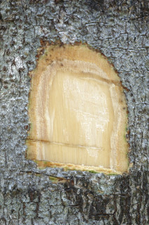
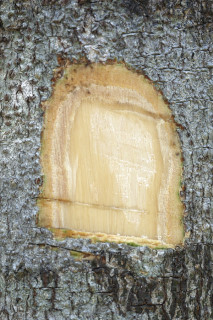
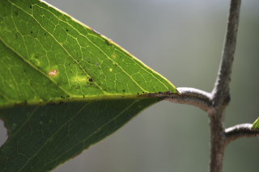
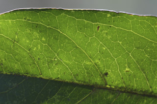
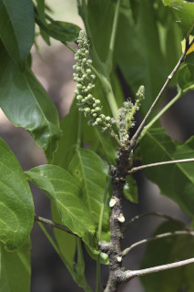
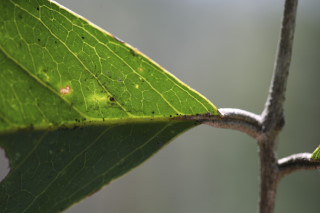
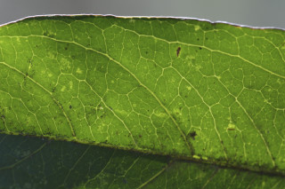
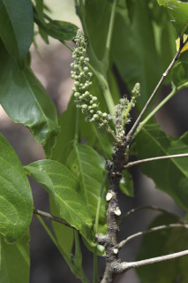

Shrubs to small trees, up to 5 m tall.
ದೊಡ್ಡ ಗಾತ್ರದ ಪೊದೆಗಳು ಅಥವಾ 5 ಮೀ ಎತ್ತರದವರೆಗಿನ ಸಣ್ಣ ಮರಗಳು.
Shrubs to small trees, up to 5 m tall.
குத்துச்செடி முதல் சிறிய மரம், 5 மீ. உயரம் வரை வளரக்கூடியது.
Bark greyish, lenticellate; blaze yellowish.
ತೊಗಟೆ ಬೂದು ಬಣ್ಣದ ಛಾಯೆಯಲ್ಲಿದ್ದು ಬೆಂಡು ರಂಧ್ರಗಳನ್ನು ಹೊಂದಿರುತ್ತದೆ; ಕಚ್ಚು ಮಾಡಿದ ಜಾಗ ಹಳದಿ ಬಣ್ಣದಲ್ಲಿರುತ್ತದೆ.
Bark greyish, lenticellate; blaze yellowish.
மரத்தின் பட்டை சாம்பல் நிறமானது, பட்டைத்துளைகள் (லெண்டிசெல்லேட்) உடையது; உள்பட்டை மஞ்சள் நிறமானது.
Young branchlets terete, glabrous.
ಕಿರುಕೊಂಬೆಗಳು ದುಂಡಾಗಿದ್ದು ರೋಮರಹಿತವಾಗಿರುತ್ತವೆ.
Young branchlets terete, glabrous.
சிறியநுனிக்கிளைகள் குறுக்குவெட்டுத் தோற்றத்தில் வளையமானது, உரோமங்களற்றது.
Leaves compound, paripinnate, rarely imparipinnate, up to 50 cm long, alternate, spiral; rachis striate, generally brown, pulvinate, terete, glabrous; petiolule 0.5-1 cm, stout, canaliculate, glabrous; leaflets 4-7 pairs, opposite or subopposite, 12-28 x 4.5-9.5 cm, narrow elliptic-oblong to oblanceolate, apex acuminate with blunt tip, base acute or slightly asymmetric, margin entire, chartaceous to subcoriaceous, glabrous; midrib raised above; secondary_nerves 7-12 pairs; tertiary_nerves broadly reticulate.
ಎಲೆಗಳು ಸಂಯುಕ್ತವಾಗಿದ್ದು ಸಮಗರಿ ರೂಪಿಗಳಾಗಿರುತ್ತವೆ, ಅಪರೂಪವಾಗಿ ಅಸಮಗರಿ ರೂಪಿಗಳಾಗಿರುತ್ತವೆ,50 ಸೆಂ.ಮೀ.ಉದ್ದ ಹೊಂದಿದ್ದು ಪರ್ಯಾಯ ಮತ್ತು ಸುತ್ತು ಜೋಡನಾ ವ್ಯವಸ್ಥೆಯಲ್ಲಿರುತ್ತವೆ; ಅಕ್ಷದಿಂಡು ಉಬ್ಬು ಸಾಲಿನ ಗುರುತುಗಳನ್ನು ಹೊಂದಿರುತ್ತದೆ, ಸಾಮಾನ್ಯವಾಗಿ ಕಂದು ಬಣ್ಣದಲ್ಲಿರುತ್ತದೆ,ಉಬ್ಬಿದ ಬುಡದ ಸಮೇತವಿದ್ದು,ದುಂಡಾಗಿದ್ದು, ರೋಮರಹಿತವಾಗಿರುತ್ತದೆ;ಉಪತೊಟ್ಟು 0.5 ರಿಂದ 1 ಸೆಂ.ಮೀ.ಉದ್ದವಿದ್ದು, ದೃಢವಾಗಿದ್ದು, ಕಾಲುವೆಗೆರೆ ಸಮೇತವಿದ್ದು ರೋಮರಹಿತ -ವಾಗಿರುತ್ತದೆ; ಉಪಪತ್ರಗಳು 4 ರಿಂದ 7 ಜೋಡಿಗಳಿದ್ದು, ಅಭಿಮುಖಿ ಅಥವಾ ಉಪ ಅಭಿಮುಖಿಗಳಾಗಿರುತ್ತವೆ,ಗಾತ್ರದಲ್ಲಿ 12-28 X 4.5 – 9.5 ಸೆಂ.ಮೀ. ಇದ್ದು, ಸಂಕುಚಿತ ಅಂಡವೃತ್ತ-ಚತುರಸ್ರದಿಂದ ಬುಗುರಿ-ಭರ್ಜಿಯ ಆಕಾರದಲ್ಲಿರುತ್ತವೆ,ಕಿರು ಪತ್ರಗಳ ತುದಿ ಮೊಂಡಾಗ್ರವುಳ್ಳ ಕ್ರಮೇಣ ಚೂಪಾಗುವ ಮಾದರಿಯಲ್ಲಿದ್ದು, ಬುಡ ಚೂಪಾಗಿ ಅಥವಾ ಕೊಂಚ ಅಸಮ್ಮಿತಿಯಾಗಿರುತ್ತದೆ, ಅಂಚು ನಯವಾಗಿದ್ದು, ಮೇಲ್ಮೈ ಕಾಗದ ಅಥವಾ ಉಪ-ಕಾಗದವನ್ನೋಲುವ ಮಾದರಿಯಲ್ಲಿರುತ್ತದೆ ಮತ್ತು ರೋಮರಹಿತ -ವಾಗಿರುತ್ತವೆ;ಮಧ್ಯನಾಳ ಮೇಲ್ಭಾಗದಲ್ಲಿ ಮೇಲೆದ್ದಿರುತ್ತದೆ;ಎರಡನೇ ದರ್ಜೆಯ ನಾಳಗಳು 7 ರಿಂದ 12 ಜೋಡಿಗಳಿರುತ್ತವೆ;ಮೂರನೇ ದರ್ಜೆಯ ನಾಳಗಳು ವಿಶಾಲ ಜಾಲಬಂಧ ನಾಳ ವಿನ್ಯಾಸದಲ್ಲಿರುತ್ತವೆ.
Leaves compound, paripinnate, rarely imparipinnate, up to 50 cm long, alternate, spiral; rachis striate, generally brown, pulvinate, terete, glabrous; petiolule 0.5-1 cm, stout, canaliculate, glabrous; leaflets 4-7 pairs, opposite or subopposite, 12-28 x 4.5-9.5 cm, narrow elliptic-oblong to oblanceolate, apex acuminate with blunt tip, base acute or slightly asymmetric, margin entire, chartaceous to subcoriaceous, glabrous; midrib raised above; secondary_nerves 7-12 pairs; tertiary_nerves broadly reticulate.
இலைகள் கூட்டிலை, இரட்டைபடை சிறகுவடிவக்கூட்டிலை (பேரிபின்னேட்), அரிதாக ஒற்றைபடை சிறகு வடிவக்கூட்டிலைகள், 50 செ.மீ. நீளமானது, மாற்றுஅடுக்கமானவை, சுழல் போன்று அமைந்தவை; மத்தியகாம்பு (ராக்கிஸ்) கோடுகளுடையது, ப்ரவுன் நிறமானது, பல்வினேட், குறுக்குவெட்டுத் தோற்றத்தில் வளையமானது, உரோமங்களற்றது; சிற்றிலைக்காம்பு 0.5-1 செ.மீ., தடித்தவை, குறுக்குவெட்டுத் தோற்றத்தில் கேனாலிகுலேட், உரோமங்களற்றது; சிற்றிலைகள் 4-7 ஜோடிகள், எதிரடுக்கமானவை அல்லது கிட்டதட்ட எதிரடுக்கமானவை, 12-28 X 4.5-9.5 செ.மீ., குறுகிய நீள்வட்டம்-நீள்சதுர வடிவானது முதல் தலைகீழ் ஈட்டி வடிவானது, அலகின் நுனி சிறிது அதிக்கூரியதுடன் அதன் முனை மழுங்கியது, அலகின் தளம் கூரியது அல்லது சிறிது சமமற்றது, அலகின் விளிம்பு முழுமையானது, சார்ட்டோசியஸ் முதல் சப்கோரியேசியஸ், உரோமங்களற்றது; மையநரம்பு மேற்புறத்தில் அலகின் பரப்பைவிட உயர்ந்து இருக்கும்; இரண்டாம் நிலை நரம்புகள் 7-12 ஜோடிகள்; மூன்றாம் நிலை நரம்புகள் அகன்ற வலைப்பின்னல் போன்றவை.
Inflorescence cauliflorus and racemes; flowers polygamodioecious, subsessile.
ಪುಷ್ಪಮಂಜರಿಗಳು ಕಾಂಡಜನ್ಮಿಗಳಾಗಿದ್ದು ಮಧ್ಯಾಭಿಸರ ಮಾದರಿಯವುಗಳಾಗಿರುತ್ತವೆ ; ಹೂಗಳು ಸಂಕೀರ್ಣಲಿಂಗಿಗಳಾಗಿದ್ದು ಗಂಡು ಮತ್ತು ಹೆಣ್ಣು ಹೂಗಳು ಪ್ರತ್ಯೇಕ ಸಸ್ಯಗಳಲ್ಲಿರುತ್ತವೆ ಮತ್ತು ಉಪ-ತೊಟ್ಟುಗಳ ಸಮೇತವಿರುತ್ತವೆ.
Inflorescence cauliflorus and racemes; flowers polygamodioecious, subsessile.
மஞ்சரி மரத்தண்டில் (காலிஃபுளோரஸ்) தோன்றுபவை மற்றும் ரெசீம் வகை மஞ்சரி; மலர்கள் பாலிகேமொடையீசியஸ், காம்பற்றது அல்லது மிகச்சிறிய காம்புடையது.
Drupe, 3.5 X 2.8; seeds black, ellipsoid.
ಡ್ರೂಪ್ಗಳು3.5X2.8 ಸೆಂ.ಮೀ. ಗಾತ್ರವಿರುತ್ತವೆ;ಬೀಜಗಳು ಕಪ್ಪು ಬಣ್ಣ ಹೊಂದಿದ್ದು ಅಂಡವೃತ್ತದ ಆಕಾರದಲ್ಲಿರುತ್ತವೆ.
Drupe, 3.5 X 2.8; seeds black, ellipsoid.
உள்ளோட்டுத்தசைகனி (ட்ரூப்), 3.5´2.8; விதைகள் கருப்பு நிறமானது, நீள்வட்ட வடிவானது.
 



 




